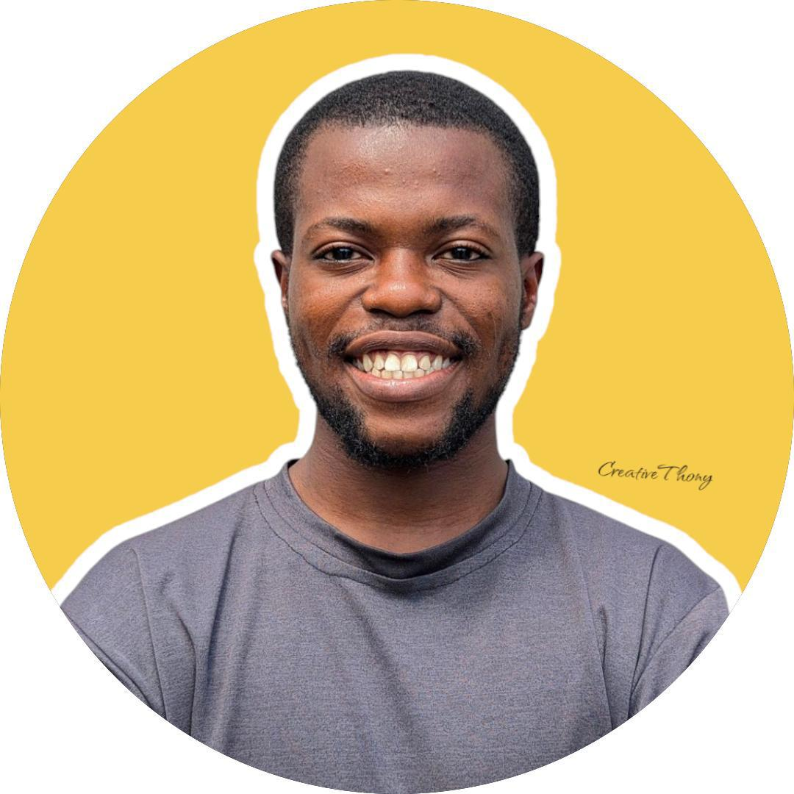

Who We Are
AfroResilience Trust is a non-profit organization founded by Said Waziri Mwenjuma (Tanzania), Anthony Geria (Nigeria), and Sanket (India). We are united by a shared mission: to empower underrepresented African communities — especially people with disabilities — through love, leadership, and dignity.
üåç Mission
To foster resilience, enable economic empowerment, and promote dignity across African communities through tailored programs, outreach, and compassion-driven action.
üöÄ Vision
To see a continent where every individual — regardless of background or condition — has the opportunity to thrive with confidence, purpose, and global relevance.
Our Approach
- Direct support to orphans and disabled individuals
- Empowerment through real stories and motivation
- Community visits to deliver help, food, and smiles
- Online awareness via content, blogs, and videos
- Leadership and skills training for future changemakers
Our Impact Timeline
- 2025: AfroResilience Trust was born across 3 nations with a common heart.
- 2025 - Present: Dozens of children and individuals with disabilities supported with real help.
- Future: Expanding to more countries, launching leadership camps, and partnering with schools.
Meet the Founders

Said Mwenjuma
Tanzania

Anthony Geria
Nigeria